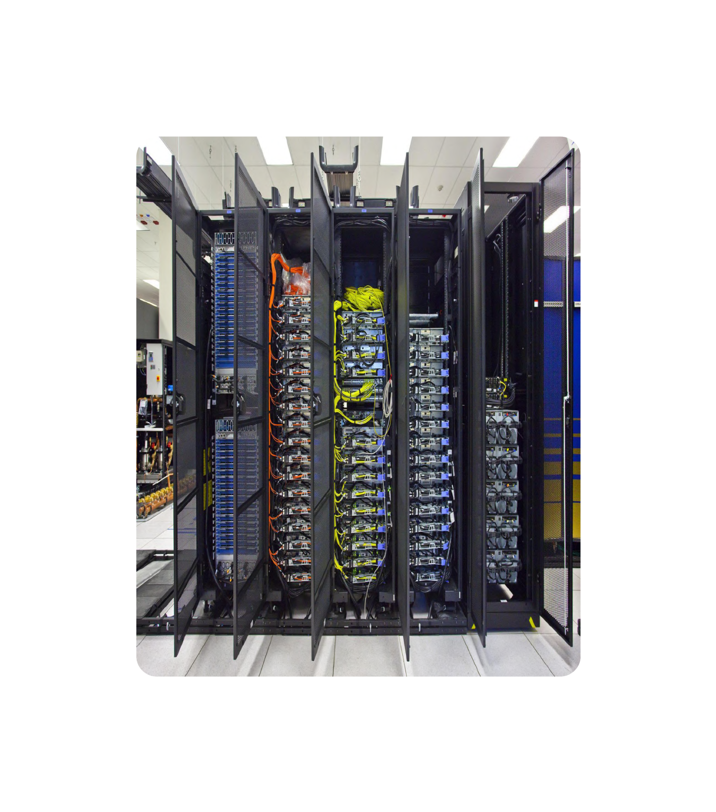
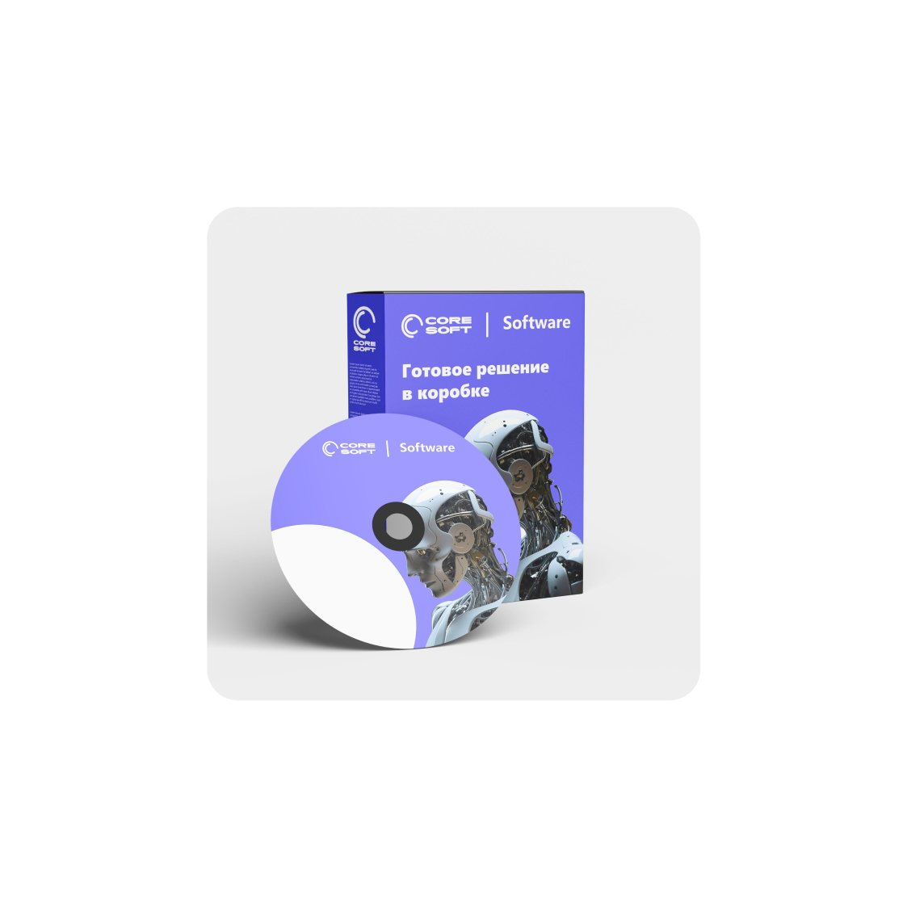
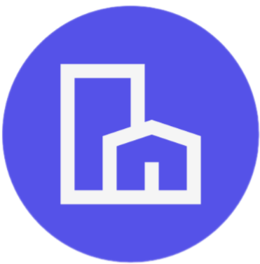
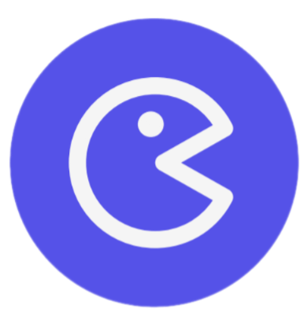
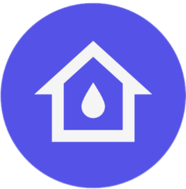
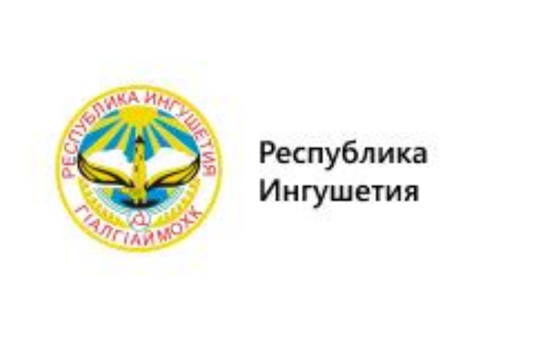
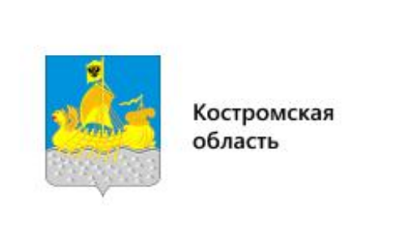
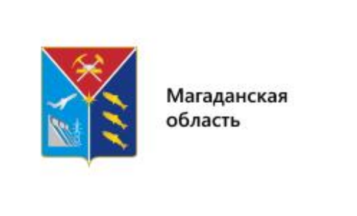
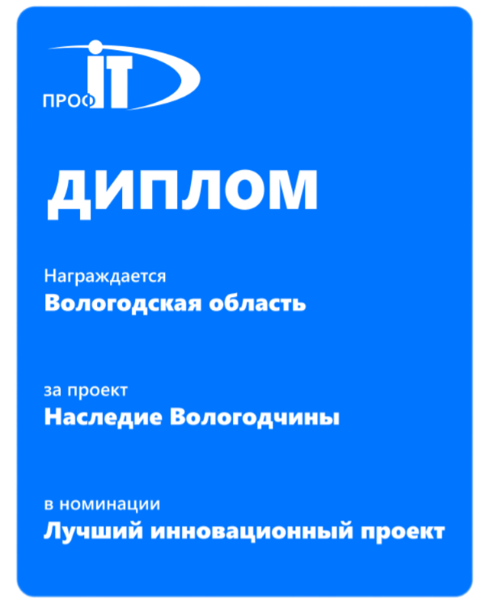
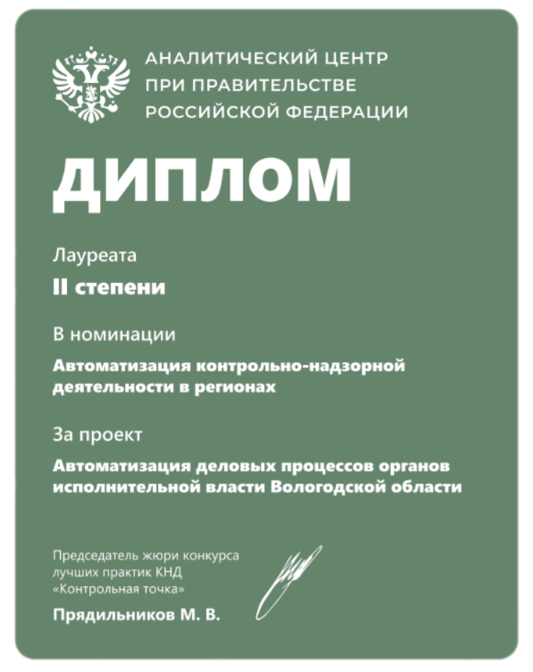

Hardware


Решения для вашего бизнеса
Core Soft лидер в области автоматизации и управления IT инфраструктурой для крупных предприятий и организаций.
Наши услуги
IT инфраструктура из free software «под ключ»
Собственные решения
Внедрение наших решений повышает до 22%
собираемость коммунальных платежей и до 30% сокращает время на работу в информационных системах
собираемость коммунальных платежей и до 30% сокращает время на работу в информационных системах
Учет и содержание объектов городского хозяйства

Системы дистанционного обучения с игровыми формами

Управление потреблением коммунальных ресурсов

RPA в КНД
(эмуляция действий пользователя)
(эмуляция действий пользователя)
Сигнальная сеть мониторинга параметров окружающей среды
Автоматизация управления для городов и регионов
Комплексное решение IT инфраструктуры под ключ
Нам доверяют
Заказчики, которые уже доверили нам и не пожалели об этом
Наши кейсы

В Республике Ингушетия мы цифровизировали систему строительного надзора, что способствует повышению качества строительства и обеспечению безопасности зданий и сооружений.
В Ставропольском крае мы внедрили системы экологического надзора,
строительного надзора, жилищного надзора, надзора в области защиты населения
и территорий от чрезвычайных ситуаций, контроля в сфере социального обслуживания
и контроля за соблюдением требований к розничной продаже алкоголя.
строительного надзора, жилищного надзора, надзора в области защиты населения
и территорий от чрезвычайных ситуаций, контроля в сфере социального обслуживания
и контроля за соблюдением требований к розничной продаже алкоголя.
В Забайкальском крае мы внедрили систему контроля за применением цен на лекарства,
что позволило предотвратить необоснованное завышение цен и обеспечить доступность лекарственных средств для населения.
Также был внедрён надзор за приёмом на работу инвалидов.
что позволило предотвратить необоснованное завышение цен и обеспечить доступность лекарственных средств для населения.
Также был внедрён надзор за приёмом на работу инвалидов.

В Костромской области наша компания реализовала проекты по экологическому надзору, строительному надзору, надзору за состоянием объектов культурного наследия,
жилищному надзору и надзору в области защиты населения и территорий от чрезвычайных ситуаций.
жилищному надзору и надзору в области защиты населения и территорий от чрезвычайных ситуаций.

В Магаданской области наша компания реализовала проекты по экологическому надзору,
надзору за состоянием объектов культурного наследия, жилищному надзору и надзору
в области обращения с отходами.
надзору за состоянием объектов культурного наследия, жилищному надзору и надзору
в области обращения с отходами.
Кейс #1: Построение центра обработки данных органов власти Вологодской области
Проект направлен на создание центра обработки данных (ЦОД) для органов власти Вологодской области. ЦОД будет обеспечивать обработку, хранение и защиту больших объемов данных, необходимых для работы государственных структур.
Цели:
- Повышение эффективности работы государственных органов за счет автоматизации процессов обработки данных.
- Обеспечение безопасности данных и защита информации.
- Снижение затрат на эксплуатацию ИТ-инфраструктуры.
Задачи:
- Проектирование и строительство ЦОД.
- Выбор и закупка оборудования.
- Настройка и тестирование системы.
- Обучение персонала.
- Обеспечение технической поддержки и обслуживания.
Результаты:
- Создание современного ЦОД, отвечающего требованиям безопасности и надежности.
- Повышение оперативности и качества предоставления государственных услуг.
- Сокращение затрат на ИТ-инфраструктуры.
Кейс #2: Построение центра обработки данных государственной информационной системы в сфере здравоохранения Вологодской области
Проект направлен на создание центра обработки данных (ЦОД) для государственной информационной системы в сфере здравоохранения Вологодской области. ЦОД будет обеспечивать обработку, хранение и защиту медицинских данных пациентов.
Цели:
- Повышение доступности и качества медицинской помощи.
- Обеспечение безопасности персональных данных пациентов.
- Снижение затрат на эксплуатацию ИТ-инфраструктуры.
Задачи:
- Проектирование и строительство ЦОД.
- Выбор и закупка оборудования.
- Настройка и тестирование системы.
- Обучение персонала.
- Обеспечение технической поддержки и обслуживания.
Результаты:
- Создание современного ЦОД, отвечающего требованиям безопасности и надежности.
- Повышение оперативности и качества оказания медицинской помощи.
- Сокращение затрат на ИТ-инфраструктуры.
Кейс #3: Создание регионального сегмента инфраструктуры единой государственной платформы сбора данных, промышленного интернета вещей и инструментов анализа объективных данных о наблюдаемых объектах в составе платформы исполнения государственных функций в Вологодской области
Цели:
- Повышение эффективности управления регионом за счет использования современных технологий сбора и анализа данных.
- Обеспечение безопасности данных и защита информациию
- Снижение затрат на эксплуатацию ИТ-инфраструктуры.
Задачи:
- Проектирование и строительство инфраструктуры.
- Выбор и закупка оборудования.
- Настройка и тестирование системы.
- Обучение персонала.
- Обеспечение технической поддержки и обслуживания.
Кейс #4: Проект на внедрение ИТ-инфраструктуры в международной компании, оказывающей консульские услуги за границей
Цели:
- Повышение эффективности работы компании за счёт использования современных технологий.
- Обеспечение безопасности данных и защита информациию
- Снижение затрат на эксплуатацию ИТ-инфраструктуры.
Задачи:
- Развертывание VPN сети с зарубежной локализацией.
- Установка VPN клиентов на АРМы заказчика (OpenVPN) для 101 пользователя.
- Установка и настройка IP-телефонии (Asterisk и Mikrotik).
- Развёртывание корпоративного почтового сервера для более чем 180 пользователей.
- Организация технической поддержки.
- Внедрение системы функционального мониторинга (Prometeus + Grofana).
- Организация системы резервного копирования и восстановления (встроенные инструменты VK Cloud).
Преимущества нашей компании
Комплексные IT услуги
Организация IT инфраструктуры «под ключ» с использованием free software и
федеральных систем.
Поставка серверного оборудования
Комплексное введение в эксплуатацию и экспертиза серверного оборудования
Собственные программные решения
Уникальные панели управления проектами, процессами и городским хозяйством.
Отзывы о нас
Что говорят наши партнеры и клиенты
Core Soft значительно упростила управление организацией. Их панели управления
- незаменимый инструмент
Их экспертиза в поставке и внедрении серверного оборудования впечатляет.
Высокий уровень профессионализма.
Нам понравилась их комплексная автоматизация наших процессов. Результаты
впечатляют.
Наши награды


Почему выбирают Core Soft?
Надёжные IT решения для сложных систем и больших данных
1
2
3
Комплексные IT-услуги
Мы предлагаем IT инфраструктуру под ключ , настройку федеральных систем и интеграцию
российского ПО, полностью соответствующую требованиям вашего бизнеса.
Современное серверное оборудование
Мы поставляем, внедряем и вводим в эксплуатацию серверное оборудование для
обеспечения стабильной и эффективной работы ваших систем.
Инновационные собственные решения
Наши уникальные панели стратегического управления и геймифицированное обучение
помогают оптимизировать процессы и повысить эффективность управления.
Свяжитесь с Core Soft
Автоматизация управления крупными системами и предприятиями